Al comenzar un documento nuevo en Excel, la celda activa es la A1. Si
escribimos un número o un texto, estamos ingresando datos en ella.
Así de sencillo resulta registrar datos. Vamos a familiarizarnos con
esta tarea y a aprender, además, a modificar el contenido presente o a
eliminarlo, según nuestras necesidades.
Ingreso
Para asegurarnos de ingresar datos en una celda es indispensable
que esta se encuentre seleccionada como activa.
Por lo tanto, con el
puntero del mouse nos posicionamos sobre ella y hacemos un clic para
que quede seleccionada y activa. Un recuadro más grueso diferencia
la celda activa del resto. Podemos trasladarnos desde una celda activa
a otra usando las flechas del teclado. Una vez en la posición deseada,
escribimos el dato que queremos ingresar.
Durante el proceso de ingreso, los caracteres que vamos escribiendo
se muestran en la celda activa y también, en la Barra de fórmulas, que
se encuentra en la parte superior de la hoja de cálculo.
Al terminar de
ingresar el dato, presionamos la tecla ENTER. También podemos pulsar
TAB, movernos con las flechas del cursor a otra posición, presionar
en la Barra de fórmulas el botón Introducir o hacer clic con el mouse en
otra celda. Cualquiera de estas alternativas hará que el dato quede
almacenado en la celda respectiva.
Si aún no hemos validado el dato y
presionamos la tecla ESC, cancelaremos lo que estábamos ingresando,
y la celda quedará tal como estaba antes de nuestra intervención.
Modificar
Para modificar un dato ingresado, podemos sobrescribirlo o editarlo.
La primera opción ocurre cuando comenzamos a escribir en una celda
que ya contiene información. En ese caso, los nuevos datos reemplazarán
por completo el contenido anterior.
Por ejemplo, si en la celda A1
tenemos la palabra Inicio, nos situamos otra vez
sobre ella, escribimos Final y presionamos ENTER,
el texto original será reemplazado por el nuevo.
La opción de edición nos permite modificar
una porción del contenido de la celda
seleccionada sin tener que borrar o sobrescribir
el dato anterior.
Si hacemos doble clic en la celda
que queremos modificar, habilitamos el modo
Edición y entonces, podemos trasladarnos con las
flechas izquierda y derecha sobre el contenido
de la celda, ya sea un texto, un número o una
fórmula. Al borrar los caracteres con SUPR o BACKSPACE, o insertar
otros nuevos entre dos existentes o al final de la cadena, podemos
rescribir la porción de una fórmula, un texto o un número. Una vez
finalizado el proceso, validamos los cambios con ENTER.
Truco: Otra manera de editar una celda es presionar la tecla F2 sobre
la celda activa. En este caso también podemos presionar ESC para
cancelar la edición y volver al contenido original de la celda sin tener
en cuenta los cambios introducidos.
Tambien podemos utilizar la barra de formulas ya que cuando se está tecleando,
el cuadro de texto de edición en la ventana de Excel
presenta un aspecto como este:
Donde:
La lista desplegable
(Cuadro de nombres) despliega una lista de nombres o funciones que se pueden añadir a la celda o emplearse
para acceder a su posición.
El botón
(Cancelar) se emplea para anular la introducción o modificación del dato que se ha estado escribiendo
en la celda.
El botón
(Introducir) aceptará el dato que se haya estado escribiendo en la celda, añadiéndolo a la hoja de
cálculo activa
El botón
(Insertar función) permite añadir una función de Excel
Observaciones:
En modo Edición, las flechas del cursor no nos permiten trasladarnos
hacia otras celdas; solo podremos movernos dentro del contenido de la
celda actual para hacer las modificaciones necesarias.
Tengamos presente que cuando
estamos modificando el contenido de una celda que contiene una
fórmula de cualquier tipo, la sintaxis de la fórmula será visible tanto
en la Barra de fórmulas como en la celda, pero no su resultado. Una
vez finalizado el proceso, en la Barra de fórmula seguiremos viendo la
sintaxis y en la celda, el resultado.
Borrar
Borrar el contenido de una o varias celdas es algo sencillo, y hay
diferentes formas de hacerlo. Primero debemos seleccionar la celda o
el rango que queremos borra y luego:
Presionamos la tecla SUPR, las celdas seleccionadas quedarán vacías.
Otra posibilidad es pulsar el botón derecho del mouse sobre las celdas seleccionadas y, en el menú
que se despliega, elegir la opción Borrar contenido.
También, desde la opción Borrar del grupo Modificar, en la pestañaInicio, podemos utilizar
Borrar todo, que elimina el contenido, los comentarios y el formato de
la celda; o seleccionar Borrar contenido, que no borrará los formatos
ni los comentarios de la selección. La opción Borrar formato elimina
solo el formato de la celda, pero no el contenido; en tanto que Borrar
comentarios elimina solo los comentarios.
Grupo portapapeles
Es el primero de todos los grupos en la ficha Inicio. Aunque su uso es muy frecuente pues resulta una herramienta
bastante util casi nunca se accede a estos comandos a través del grupo en la barra superior de la pantalla, sino a
través de combinaciones de teclas en el teclado.
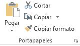
Este es el grupo que permite copiar o cortar celdas y pegarlas, con varias opciones alternativas
a cada una de estas acciones.
Copiar (Ctrl + c) y Pegar (Ctrl + v)
Cuando queremos duplicar el contenido de una celda en otra celda distinta seleccionamos la celda origen como celda
activa, pulsamos el comando “Copiar” o la combinación de teclas Ctrl + c de manera simultánea, seleccionamos la celda
de destino como celda activa y pulsamos el comando “Pegar” o la combinación de teclas Ctrl + v de manera simultánea.
Observación:
Cuando copiamos el contenido de una celda en otra celda, debemos tener presente las siguientes consideraciones:
Si el contenido de la celda de origen es un texto, entonces la celda destino tendrá ese mismo texto.
Si el contenido de la celda origen era una fórmula con todos los números introducido a mano, entonces la celda destino
también tendrá esa misma fórmula exactamente igual.
Sin embargo, si la celda origen es una formula con referencias
a otras celdas (de la misma hoja o de distinta), la celda de destino no hará referencia a las mismas celdas, sino a las
celdas en la posición relativa al desplazamiento.
Cortar (Ctrl + x)
Cortar funciona exactamente igual que copiar, con la diferencia que una vez que se pegan las celdas cortadas, las celdas de
origen se borran.
El atajo de teclado es la combinación de teclas Ctrl + x de forma simultánea.
Copiar formato
Funciona de manera similar a copiar, pero tan solo copia el formato de las celdas seleccionadas, no su contenido.
No tiene atajo de teclado, y una vez pulsado el comando el formato se pega en la celda destino que se seleccione,
no hay que pulsar ningún comando más.
Truco: Una funcionalidad importante de este comando, es pulsar doble click sobre el botón.
Al hacer esto seleccionamos de forma permanente el formato a copiar, pegándolo en todas las celdas que seleccionemos,
sin tener que pulsar sobre el botón varias veces si queremos copiar un formato a varias celdas.
Otras opciones de copiado
Copiar las celdas seleccionadas como una imagen
El comando Copiar tiene alternativamente la opción de copiar las celdas seleccionadas como una imagen.
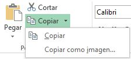
Al hacer esto y usar pegar en este u otro programa se pegan las celdas copiadas (en contenido y forma) en forma de imagen,
como si hubiéramos hecho una captura de pantalla, sin poder modificar estos datos de ninguna forma (más que con un programa
de edición de imágenes)
Otras opciones de pegado
Al pegar unas celdas podemos utilizar distintos tipos de Pegar. Podemos acceder a las opciones desde el comando
del grupo Portapapeles, pulsando en la flecha hacia abajo justo debajo del botón Pegar, o podemos pegar las
celdas de manera normal y en la esquina inferior izquierda nos aparece un botón en el que pone (Ctrl).
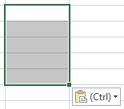
Si hacemos clic, aparece el siguiente desplegable:
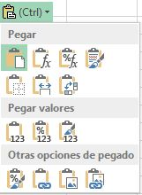
En orden de izquierda a derecha y de arriba abajo las opciones son estas:
Icono
Opcion
Resultado
Pegar
Pega las celdas seleccionadas, la opción estándar al pegar, la que se realiza al Crtl + v.
Fórmulas
Pega solo las fórmulas, sin formato de ningún tipo, moviendo las referencias a otras celdas como
acabamos de ver.
Formato de fórmulas y números
Pega las fórmulas y su formato de contenido, no el formato de la celda.
Mantener formato de origen
Pega el formato de las celdas originales y su contenido.
Sin bordes
Pega todo excepto los bordes.
Mantener ancho de columnas de origen
Pega todo y fija el ancho de la columna donde esté la celda destino
igual al ancho de la columna de la celda original
Transponer
Pega las filas en forma de columna y las columnas en forma de fila. Las referencias que tengan
las celdas también se modifican de la misma manera.
Valores
Pega el resultado de las fórmulas de origen, sin fórmula ni formato.
Formato de valores y números
Es como pegar valores, pero también mantiene el formato del contenido de las
celdas de origen.
Formato de valores y origen
Es como pegar valores, pero mantiene por completo el formato de las celdas de origen.
Formato
Es lo mismo que utilizar el comando copiar formato.
Pegar vínculo
Excel crea vínculos hacia las celdas origen de manera que cualquier cambio hecho en ellas
se vea reflejado en las celdas destino.
(celda destino = celda origen). No copia formatos.
Imagen
Al igual que copiar imagen, pega la selección como una imagen no modificable por el programa
Imagen vinculada
Una mezcla entre los dos anteriores, pega la selección como una imagen, pero los
cambios realizados en las celdas originales se reflejan en la imagen pegada.
Copiar celdas utilizando el Portapapeles
El Portapapeles es una carpeta temporal donde se almacena la
información que cortamos y copiamos en las diferentes aplicaciones
de Windows.
Con el Portapapeles podremos pegar hasta 24 objetos almacenados en él con sucesivas copias.
Esta barra tiene el aspecto de la figura de la derecha.
Puedes acceder al Portapapeles haciendo clic en la pequeña flecha que aparece en la parte superior derecha de la sección
Portapapeles de la pestaña Inicio.
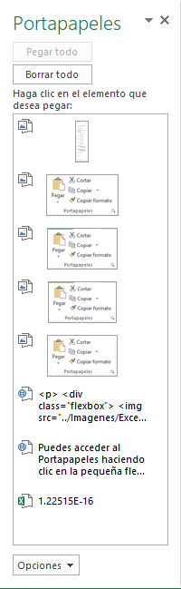
En esta ultima ventana podremos observar a los objetos que tenemos en el portapapeles.
Para pegar uno de ellos, hacer clic sobre el objeto a pegar.
Para pegar todos los elementos a la vez, hacer clic sobre el botón
Si no nos interesa ver la Barra del Portapapeles, hacer clic sobre su botón cerrar botón cerrar del panel
o volver a pulsar el botón con el que lo mostramos.
Podemos también elegir si queremos que aparezca automáticamente esta barra o no a la hora de
copiar algún elemento. Para ello: Hacer clic sobre el botón
Seleccionar la opción Mostrar automáticamente el Portapapeles de Office, para activar en caso de querer
visualizarla automáticamente, o para desactivarla en caso contrario.
Al desplegar el botón de opciones también podemos activar algunas de las siguientes opciones descritas a continuación:
Si activamos la opción Recopilar sin mostrar el Portapapeles de Office copiará el contenido del portapapeles sin mostrarlo.
Si activamos la opción Mostrar el icono del Portapapeles de Office en la barra de tareas aparecerá en la barra de tareas del sistema
(junto al reloj del sistema) el icono del portapapeles
Si activamos la opción Mostrar estado cerca de la barra de tareas al copiar mostrará en la parte inferior derecha de la ventana
un mensaje informándote del número de elementos copiados
Mover/desplazar celdas
Mover celdas utilizando el portapapeles
La operación de mover desplaza una celda o rango de celdas a otra posición. Cuando utilizamos
el portapapeles entran en juego dos operaciones Cortar y Pegar. La operación de Cortar desplazará
las celdas seleccionadas al portapapeles de Windows y Pegar copia la información del portapapeles
a donde nos encontramos situados.
Seleccionar las celdas a mover.
Seleccionar la pestaña Inicio y hacer clic en el botón Cortar o bien utiliza la combinación
de teclado CTRL + X.
Aparece una línea de marca alrededor de las celdas cortadas indicándonos la información situada
en el portapapeles.
A continuación seleccionar las celdas donde quieres que se sitúen las celdas cortadas
(no hace falta seleccionar el rango completo sobre el que se va a pegar, ya que si se
selecciona una única celda, Excel extiende el área de pegado para ajustarlo al tamaño y
la forma del área cortada. La celda seleccionada será la esquina superior izquierda del
área pegada).
Seleccionar la pestaña Inicio y haz clic en el botón Pegar O bien, utiliza la
combinación de teclado CTRL + V.
Cuidado, ya que al pegar unas celdas sobre otras no vacías, se borrará el contenido de éstas
últimas, no podemos utilizar el pegado especial visto en el tema anterior.
Mover celdas utilizando el ratón
Desplazar un rango de celdas a otra posición dentro de la misma hoja
Seleccionar las celdas a mover.
Situarse sobre un borde de la selección.
El puntero del ratón se convertirá en una flecha
blanca apuntando hacia la izquierda y una cruz de 4 puntas, tal como esto
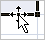
Pulsar el botón del ratón y manteniéndolo pulsado, arrastrarlo hasta donde
quieres mover el rango.
Observa como aparece un recuadro que nos indica dónde se situará el rango en caso de
soltar el botón del ratón
Suelta el botón del ratón cuando hayas llegado a donde quieres dejar las celdas.
Mover algún rango de celdas a otra hoja
Seleccionar las celdas a mover.
Situarse sobre un borde de la selección.
El puntero del ratón se convertirá en una flecha blanca apuntando hacia la izquierda y
una cruz de 4 puntas, tal como esto
Pulsar el botón del ratón y sin soltarlo pulsar la tecla ALT, después pasar el puntero del
ratón sobre la pestaña de la hoja a la cual quieras mover el rango de celdas que hayas
seleccionado, verás que esta hoja pasa a ser la hoja activa.
Una vez situado en la hoja deseada soltar la tecla ALT.
Después, soltar el puntero del ratón una vez situado en el lugar donde quieres dejar las celdas.
Autorelleno
Esta función de Excel detecta automáticamente una serie de datos y la continua a lo largo de todas las celdas que
se le indique. Por ejemplo, con escribir en dos celdas consecutivas 1 y 2 respectivamente, con autorrelleno podemos
continuar la serie poniendo 3, 4, 5… sin tener que escribirlos manualmente. Lo mismo ocurre con números salteados,
fechas, y cualquier serie que Excel pueda identificar como tal.
Al tener una o varias celdas seleccionadas, observamos en la esquina
inferior derecha de la selección un pequeño cuadrado verde separado
levemente del resto del recuadro, que se denomina controlador de
relleno.
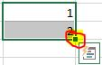
Si posicionamos el puntero del mouse sobre esta esquina, este
se transformará en una cruz negra más fina que la original, para indicar
que estamos en posición de estirar la selección.
Si pinchamos en ella y arrastramos hacia la derecha o hacia abajo comenzará a actuar el autorrelleno.
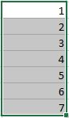
Lo mismo ocurre si lo hacemos con una cadena de texto y números:
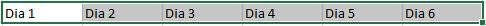
O con los meses del año:
Si al pinchar en la esquina inferior derecha y arrastrar no funciona el autorrelleno es porque no está en modo
Serie de relleno sino en Copiar celdas. Esto suele ocurrir cuando se intenta hacer una serie con una sola
celda rellena inicialmente. La forma más rápida de cambiar entre estos dos modos es mantener pulsada la tecla Ctrl
mientras se pincha y arrastra.
Controlador de relleno
El controlador de relleno permite repetir los datos de una celda o
crear series de datos. Para repetir un dato introducido en una celda
bastará con escribirlo y arrastrar el controlador de relleno en la
dirección deseada.
Ejemplo: Si en la celda A1 escribimos la palabra
Muestra, luego nos posicionamos sobre ella, activamos el puntero
estirar y con el botón principal apretado nos trasladamos cuatro celdas
hacia abajo hasta A5, al soltar el botón del mouse, estas celdas tendrán
la palabra Muestra, igual que A1. Sin embargo, si el contenido inicial
fuese Muestra 1, luego de arrastrar con el puntero estirar, veremos en
las celdas siguientes: Muestra 2, Muestra 3 y así sucesivamente, hasta el
final del área que hemos arrastrado. Esto se debe a que Excel identifica
que el dato lleva un número y en base a ello crea una secuencia.
Para crear series de datos bastará ingresar los dos primeros valores de la
serie y arrastrar el controlador de relleno. En este caso, el programa
reconoce la diferencia entre ambos y la aplica para continuar la
serie.
Ejemplo: Si en la celda A1 escribimos el número 40 y en la
celda A2 el número 45, seleccionamos ambos valores y arrastramos
el controlador, Excel seguirá completando las celdas con los valores
50, 55, 60, 65. Esto se debe a que reconoce que entre los dos primeros
valores había 5 unidades de diferencia
Cuando el contenido inicial es un dato de tipo fecha, al arrastrar
con el puntero estirar, en las celdas siguientes veremos cada fecha
incrementada en un día. En caso de que en la columna inmediata,
izquierda o derecha, de la celda que tenemos activa hubiera celdas
consecutivas con contenido, al hacer doble clic sobre el puntero
arrastrar de la celda activa, se completará la serie hasta la celda final
de la última fila que contiene datos adyacentes.
Opciones de autorelleno
Al terminar de arrastrar una serie, abajo y a la derecha del área
resultante aparece un botón, se trata del menú Opciones de autorrelleno.
Cuando presionamos sobre él, se despliegan otras alternativas
destinadas a cambiar el modo en que se completaron los datos:
La forma más precisa de establecer a Excel que queremos hacer al usar la opción de autorrelleno es pulsar en el botón
que aparece abajo a la derecha tras realizar un autorrelleno.
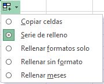
Copiar celdas: Es como hacer copiar y pegar, pero arrastrando en vez de con el comando. Es decir,
copia las celdas sin completar una serie.
Serie de relleno: Es el autorrelleno propiamente dicho, completa completa de manera automática la serie según el
criterio utilizado para el cálculo.
Rellenar formatos solo: copia únicamente el formato de las celdas de
origen en las celdas de destino.
Rellenar sin formato: completa una serie respetando el formato de las
celdas, es decir, sin modificar su aspecto.
Relleno rápido: Detecta un patrón que relaciona varias celdas y lo continúa. Por ejemplo, si en la columna
A tienes 10 nombres, en la B 10 apellidos y en la C1 escribes el nombre de A1 y el apellido de B1 todo seguido,
el relleno rápido escribirá en la columna C el nombre y apellido junto de todas las demás filas (casi no se utiliza).
Observación: El menú de autorrelleno permite modificar el modo
en que se comporta el puntero estirar luego de arrastrar una celda o rango
Trucos y atajos
Atajo
Resultado
Ctrl + D
Copia sobre la celda seleccionada el contenido de la celda de la izquierda. Si está seleccionado un rango copiará a
todo el rango el contenido de la celda o celdas en la columna más a la izquierda de la selección.
Ctrl + J
Igual que la combinación Ctrl + D , copiando el valor de las celdas superiores a las inferiores.
Ctrl + Enter
Si seleccionamos un rango de celdas y escribimos algo, el contenido aparecerá en la celda superior izquierda.
Si tras esto pulsamos “Ctrl” + “Enter”lo que hayamos escrito se escribirá sobre todas las celdas que tuviéramos
seleccionadas.
Si lo que escribimos es una fórmula las referencias a otras celdas se moverán como lo harían al copiar y pegar
normalmente.
Atajo
Resultado
Ctrl + N
Cambia el estilo de letra de las celdas seleccionadas a negrita.
Ctrl + K
Cambia el estilo de letra de las celdas seleccionadas a cursiva.
Ctrl + S
Cambia el estilo de letra de las celdas seleccionadas a subrayado
Ctrl + 5
Cambia el estilo de letra de las celdas seleccionadas a tachado.
Ctrl + +
Introduce una celda, fila o columna. Si al momento de pulsar esta combinación tenemos seleccionada una celda nos
preguntará si queremos desplazar las celdas hacia abajo o hacia la derecha, o si queremos introducir toda una fila
o columna. Si al momento de pulsar tenemos seleccionada toda una fila o columna directamente introducirá una fila o
columna desplazando las anteriores hacia abajo o derecha respectivamente.
Ctrl + -
Elimina una celda, fila o columna. Funciona igual que el anterior comando.
Ctrl + ↓→↑ / ← (flechas del teclado)
Cuando nos estamos moviendo por una tabla, podemos avanzar hasta la última celda con contenido con estos comandos.
Si estamos en la celda superior izquierda y pulsamos “Ctrl” + “↓”, la celda activa se moverá hasta la celda inferior
izquierda de la tabla (si no hay ningún dato en la columna de la selección nos moveremos hasta la última fila de la
hoja, la fila 048.576). Con “Ctrl” + “→” nos moveremos a la derecha del todo, “Ctrl” + “↑” nos lleva arriba y
“Ctrl” + “←” a la izquierda.
Mayús + ↓→↑ / ← (flechas del teclado)
La tecla “Mayús” o “Shift”, junto con las flechas del teclado, nos permite ir seleccionando un rango de celdas a
la vez que desplazamos la celda activa de posición. Por ejemplo, nuestra celda activa es la A1, pulsamos y mantenemos
la tecla “Shift” y pulsamos “→”, “→”, “↓”, “↓” y soltamos “Shift”, tendremos seleccionado el rango de celdas desde la A1 hasta la C3.
Ctrl + Mayús + ↓→↑ / ←
Con esto se suman los efectos de los dos atajos de teclado nombrados anteriormente, por lo que no es difícil averiguar
cuál será el resultado producido: es la forma más rápida de seleccionar todo el rango de una tabla. Para empezar,
nos posicionamos en la celda superior izquierda de una tabla, pulsamos y mantenemos “Ctrl” y pulsamos y mantenemos “Shift”;
ahora pulsamos “↓”, con lo que nos habremos movido a la celda más inferior con datos, seleccionando también todas las celdas
entre medias; a continuación pulsamos “→”, moviéndonos a la celda más a la derecha con datos, y seleccionando también todas
las celdas entre medias, con lo cual ya tenemos toda la tabla seleccionada (soltamos “Ctrl” y “Shift”).
Ctrl + ,
Introduce en la celda activa la fecha de hoy. El valor es estático, por lo que si mañana abrimos esta misma hoja seguirá
apareciendo la fecha del día original.
F4
Repite la última acción realizada. Si por ejemplo acabamos de poner un tipo de letra en una celda y queremos hacer lo
mismo en otra, podemos seleccionar la celda destino y pulsar “F4”
F9
Actualiza la hoja. Al hacer esto Excel realiza de nuevo todos los cálculos de las fórmulas que hay en la hoja.
La mejor manera de comprobar su funcionamiento es escribir en una celda la función “=aleatorio()”. Esta función pone
en la celda un número aleatorio entre 0 y 1 (con decimales), y el número solo cambia si se vuelve a calcular la hoja
(se puede forzar pulsando F9).
F1
El más importante de todos los comandos nombrados, abre la ayuda de Excel. Es imposible conocer todos los
atajos y combinaciones que existen en Excel, ni acordarse de todas las funcionalidades, fórmulas, formatos, etc.
Por eso es importante saber como acceder al menú de ayuda.
Rangos: Bloques de celda
Existe un modo de referirse a un grupo de celdas contiguas, siempre y cuando
formen un rectángulo de celdas. Para ello, se utiliza la referencia de dos de ellas: la
superior izquierda y la inferior derecha del grupo.
Para referirse al grupo (rango) de celdas basta con escribir la primera, seguida de
dos puntos (:) y, a continuación, escribir la segunda.
Por ejemplo,
en la siguiente imagen puede apreciarse un rango de celdas ocupadas con datos. El rango
comenzaría por la celda cuya referencia es A2 (que es una celda vacia) y terminaría en
K12 (que contiene el dato 100). Para referirse a este rango se indicaría A2:K12.
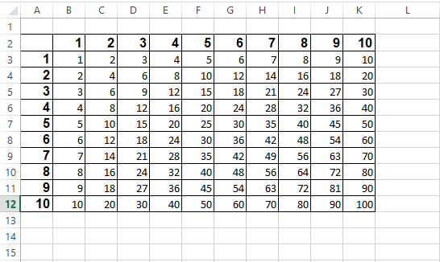
Observaciones:
Los rangos pueden recibir un nombre para que no sea
necesario especificar sus referencias constantemente.
Los rangos se utilizan fundamentalmente en las funciones, ya que, en muchas de
éstas, debe indicarse un rango de celdas que será el grupo de datos que utilice la función.
Nombres para bloques de celdas
A un grupo de celdas (incluso a una sola) se le puede asignar un nombre. Así,
podremos utilizarlo en lugar de las referencias a esas celdas.
Para realizar los trabajos relacionados con el nombre de las celdas se accede al
grupo Nombres definidos de la pestaña Fórmulas en la cinta de opciones:
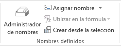
Referencias
Las referencias son indispensables para trabajar
con las fórmulas y las funciones. Las fórmulas pueden contener,
aparte de datos numéricos simples, referencias a
datos de otras celdas
Referencia a una celda
Sabemos que una celda puede contener datos de tipo texto,
números, fechas, horas y, también,
fórmulas y funciones. Estos datos
pueden ser ingresados por nosotros o generarse como resultado de
aplicar una fórmula o función. En este último caso, los datos harán
referencia al contenido de otra celda y serán dependientes. Entonces,
tendremos una celda de origen y una celda dependiente.
Al cambiar el contenido de la celda de origen, las celdas que dependan
de esta se actualizarán automáticamente. Para hacer referencia a una celda, nos
ubicamos en la celda dependiente, ingresamos el signo igual (=) y,
a continuación, seleccionamos la celda o escribimos el
nombre de la celda de origen. Por ejemplo: =A2.
En Excel existen tres tipos de referencias: relativas, absolutas y
mixtas. A continuación las veremos en detalle
Referencias relativas
Una referencia relativa es aquella que se modifica al cambiar la
posición de la celda dependiente (que contiene la fórmula). En este
caso, como la ubicación de la celda de origen es relativa a la celda
de destino, cuando cambia una, también cambia la otra. Es decir, si
copiamos y pegamos una fórmula a otra celda, cambiará la celda de
origen a la que se hace referencia
En la imagen anterior al copiar el contenido de la celda B3 (que hace referencia
a A1) y pegarlo en B7 automáticamente cambia la referencia a la celda A5.
Observaciones:
Cuando copiamos y pegamos una fórmula en otra celda de la misma
columna, se modificará el número de la fila de la referencia, según la
posición relativa entre la celda de destino y la celda de origen.
Cuando copiamos y pegamos una fórmula en una celda de la
misma fila, cambiará de manera automática la letra de la columna
de la referencia, de acuerdo con la posición relativa entre la celda
de destino y la celda de origen.
Observacion: De manera predeterminada, cuando copiamos y pegamos una
fórmula, Excel utiliza referencias relativas
Referencias absolutas
Una referencia absoluta siempre refiere a una celda de origen
determinada (fija). Por eso, la utilizamos cuando queremos copiar y pegar
una fórmula a otra celda y mantener la referencia a la celda de origen.
Para esto, debemos fijar la referencia anteponiendo el signo de pesos
($) a la letra de la columna y al número de la fila:
=$A$1.
Esta tarea se puede realizar de dos maneras distintas:
Manual: Haciendo doble clic sobre la celda que contiene la fórmula
y, desde el teclado, ingresamos el signo $ antes de la letra y del
número de la referencia. También podemos ubicarnos sobre la
celda que contiene la fórmula y agregar el signo $ desde la Barra de
fórmulas. En ambos casos, luego pulsamos ENTER.
Tecla F4: Haciendo doble clic sobre la celda que contiene la fórmula
o hacemos un clic sobre la Barra de fórmulas, pulsamos F4 en el
teclado y luego, ENTER o el botón Introducir.
Referencias mixtas
Una referencia mixta tiene una parte relativa y otra absoluta: la
columna relativa y la fila absoluta o la columna fija y la fila relativa.
=A$2 o =$A2
Si copiamos y pegamos en otra celda una fórmula que contiene una
referencia mixta, la parte relativa se actualizará de manera automática
y la parte absoluta permanecerá fija.
Para hacer una referencia mixta, debemos anteponer el signo peso
($) a la letra de la columna o al número de la fila, de forma manual
o mediante la tecla F4. Si la pulsamos dos veces, fijará la fila, y si la
presionamos tres veces, fijará la columna.
Uso de referencias relativas y absolutas
Las referencias relativas y absolutas nos facilitarán el trabajo y nos
permitirán ahorrar tiempo cuando utilicemos fórmulas y funciones.
Entender qué son las referencias relativas y las referencias absolutas que
utilizamos en las fórmulas y funciones suele ser difícil al principio. En
la práctica son herramientas muy útiles, y su uso es mucho más sencillo
de lo que parece.
Referencias a datos de otras hojas
Cuando se desea utilizar una fórmula en la que hay un dato de otra hoja, es
necesario teclear el nombre de esa hoja para referirse al dato (se denomina vincular datos de
otras hojas). Se escribe dicho nombre seguido del signo de exclamación cerrado (!) y la
referencia de la celda.
Por ejemplo, si se ha de multiplicar por dos el dato que hay en la celda
C7 de la Hoja3 (suponiendo que el resultado deba aparecer en otra hoja), la forma correcta
de hacerlo sería:
=Hoja3!C7*2
Observacion
Si una fórmula calcula un resultado grande, es posible que la cifra que se obtenga
ocupe más espacio del que quepa en la columna. En ese caso, Excel suele ofrecer un
dato con muchas almohadillas:
########
Lo único que necesitará será ampliar la anchura de la columna hasta que el número
entre dentro sin problemas. Puede ampliar una columna haciendo clic entre sus letras
(por ejemplo, entre las letras de las columnas A y B) y, sin soltar el botón del ratón,
arrastrando a la izquierda o la derecha según necesite.
Formato condicional
En la sección anterior hemos aprendido a usar los formatos de las celdas y
de su contenido. Esto se hace principalmente para resaltar contenidos (como poner color a los títulos),
o para llamar la atención sobre algunos datos (por ejemplo, marcar en rojo los periodos donde
tenemos pérdidas en lugar de beneficios). Sin embargo, una vez que establecemos el formato de
una celda, esta queda siempre de la misma manera (a menos que lo cambiemos de nuevo a mano)
Principalmente, el formato condicional se utiliza para definir un formato para una celda o grupo
de celdas (hasta aquí como lo que ya hemos visto), con la particularidad de que este formato se
aplica sobre las celdas solo si se cumple una condición definida previamente, por ejemplo, poner
un fondo verde si el valor es mayor que 0 y color de letra rojo si el valor es menor que 0.
Por tanto, para aplicar un formato condicional como este a una celda o rango de celdas es
necesario definir estos dos elementos:
Condición que Excel comprobará si es verdadera o falsa.
Formato que aplicar a las celdas en el rango si la anterior condición es ser verdadera.
Otro tipo de formatos condicionales son los que no necesitan una condición para aplicarse,
sino que se aplican sobre un grupo de celdas, y el formato de cada una de ellas depende de
su propio valor en relación al valor de todas las demás (no te preocupes si no terminas de
entenderlo aún, lo comprenderás tan pronto como veas un ejemplo).
Excel ofrece la posibilidad de aplicar formatos condicionales a las celdas seleccionadas con la
utilización de formatos condicionales predefinidos, lo cual además de sencillo es muy rápido de
hacer, y para ocasiones que requieran formatos específicos, podemos modificar los predefinidos
o crear nuestros propios formatos condicionales personalizados desde cero.
Formatos predefinidos para resaltar celdas
Supón que estás trabajando en Excel con una tabla de datos con muchas filas. En esta tabla
hay una columna llamada ingresos, pero como hay tantos datos no es fácil distinguir las
líneas con beneficios y cuáles son las que tienen pérdidas.
Para facilitar la identificación visual de las líneas con beneficios podríamos usar un
formato condicional que ponga un fondo verde a la celda si el valor es mayor que 0.
Esto lo podemos hacer de manera bastante rápida si usamos un formato condicional predefinido
sobre las celdas que tengamos seleccionadas. Para ello nos fijamos en el grupo Estilos de
la ficha Inicio, en concreto en el comando Formato condicional. Al hacer click se
despliega un menú, donde vemos las distintas opciones de formato condicional, y dejamos
el ratón sobre Reglas para resaltar celdas.
En el último menú desplegado nos pide seleccionar que clase de condición vamos a introducir:
Es mayor que
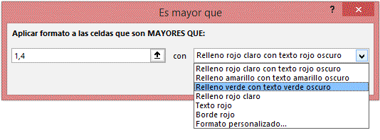
Todas las opciones para resaltar celdas funcionan prácticamente igual;
Seleccionamos el tipo de condición que vamos a comprobar
En la nueva venta introducimos el valor que hace que se cumpla
la condición y el formato que tendrá la celda si se cumple la condición.
Las dos condiciones ligeramente diferentes son Fecha (en la que tienes que elegir la fecha de
una lista desplegable) y Duplicados (en la que tienes que elegir del desplegable si marcar
valores duplicados o únicos).
Reglas superiores e inferiores
La otra opción de formato condicional para resaltar las celdas es Reglas superiores e
inferiores
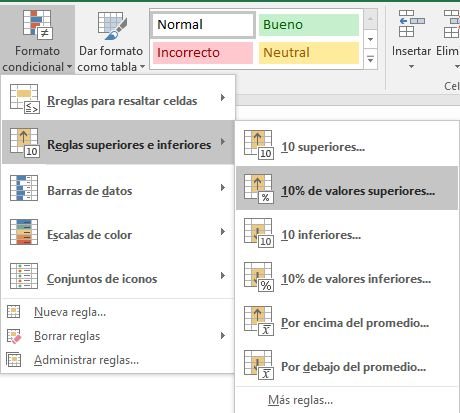
Desde aquí podemos aplicar un formato condicional que nos aplique el formato a los 10 valores más
altos (el título dice 10, pero al entrar se puede modificar el número), al 10% más alto
(también se puede modificar el 10% al porcentaje que queramos), a los inferiores
(en número o en porcentaje) y a los que están por encima o por debajo del promedio de los valores
a los que estemos aplicando el formato.
Barras de datos predefinidas
Este formato se utiliza para ver de un vistazo rápido cuales son los valores mayores
de la selección. Cuando se aplica este formato sobre un conjunto de celdas, todas ellas
se rellenan con barras de un color. La celda con el valor más alto de todos los de la
selección estará completamente ocupada por la barra, las celdas con valor cero (0) no
tienen barra, y los valores intermedios se rellenan en proporción al valor máximo.
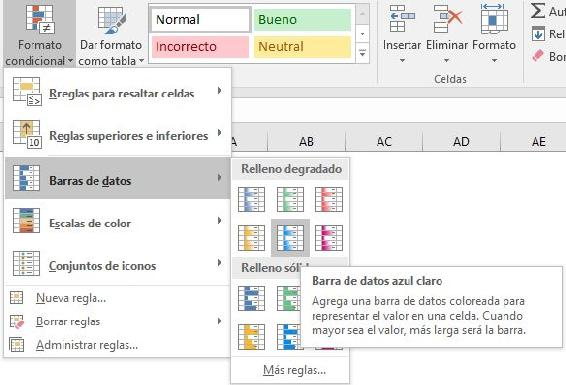
Observación:
Este tipo de formato condicional es del tipo que adelantábamos en la introducción del capítulo que
no requieren de una condición inicial para aplicar el formato o no aplicarlo, sino que lo aplica
siempre, y lo hace en relación al valor de las celdas seleccionadas.
Para aplicar este tipo de formato condicional usaremos el comando Formato condicional,
Barras de datos, y seleccionamos el tipo que queramos.
Todos los tipos de barras de datos son iguales, cambiando únicamente el color de las barras,
y color sólido (toda la barra tiene el mismo color) o degradado (como el de la imagen anterior,
el color se va haciendo más blanquecino a la derecha de la barra).
Escalas de color predefinidas
Su funcionamiento es muy similar al de las barras de datos. No requiere de una condición
inicial para aplicar el formato si se cumple, sino que aplica siempre el formato y lo hace en
función del valor de cada celda en relación al valor de las demás celdas de la selección,
con la diferencia de que este tipo de formato utiliza colores en vez de barras para diferenciar
a los valores más altos de los más bajos.
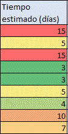
Para aplicar este tipo de formato condicional usaremos el comando Formato condicional,
Escalas de color, y seleccionamos el tipo que queramos.
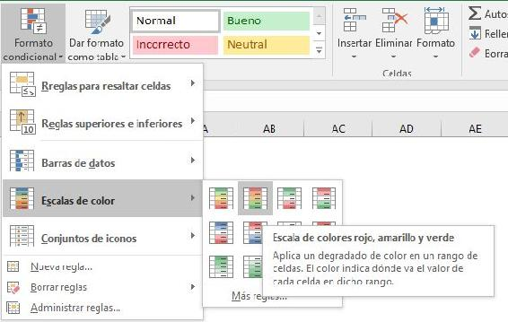
Para determinar qué color aplicar a cada celda debemos seleccionar el color que tendrá la celda con el
valor superior, el que tendrá la celda con el valor inferior, y en algunos casos el color que tendrá
la celda con el valor intermedio. Si elegimos solo 2 colores se llamará escala de 2 colores y si elegimos
3 colores será una escala de 3 colores.
Conjuntos de iconos predefinidas
El último tipo de formatos condicionales predefinidos son los conjuntos de iconos, que funcionan
de forma muy similar a los dos anteriores, se seleccionan las celdas a las que aplicar y en base
a su valor en relación al valor de las demás celdas de la selección se aplica un icono u otro.
Para aplicar este tipo de formato condicional usaremos el comando Formato condicional,
Conjuntos de iconos, y seleccionamos el tipo que queramos.
El mayor de los valores de la selección tendrá el icono más favorable, el más bajo tendrá el más
desfavorable, y los intermedios se reparten según cuantos tipos de iconos haya en el conjunto elegido.
Por ejemplo, en una selección con valor mínimo 0 y máximo 100, si elegimos un conjunto con 3 iconos los
valores de 0 a 33 tendrán el más desfavorable, del 34 al 66 tendrán el intermedio, y del 67 al 100
tendrán el más favorable. Si hubiéramos elegido 5 iconos el reparto sería 0-20, 21-40, 41-60, 61-80
y 81-100.
Detectar los formatos condicionales en una hoja
Una vez que hemos terminado de poner formatos condicionales a nuestra hoja es igual de importante saber
detectar en que celdas hay formatos condicionales, de que tipo y cuales tienen formatos condicionales
en conjunto (importante en las barras, escalas e iconos, ya que el grupo es indispensable para saber
cuál es el máximo).
La detección es el paso intermedio entre la utilización de un formato condicional predefinido y
la modificación de los mismos: no puedes modificar un formato que no sabes localizar.
Para ver los formatos condicionales que hay aplicados a un rango de celdas lo seleccionamos y
vamos al comando Formato condicional, a la opción Administrar reglas del desplegable.
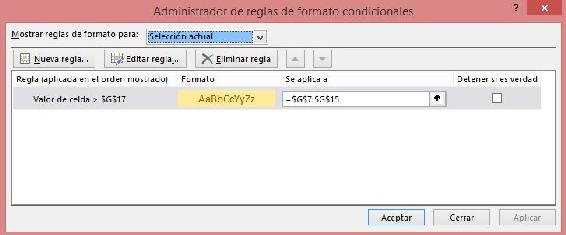
Se abre la siguiente ventana, en la que vemos los formatos aplicados a las celdas seleccionadas.
En la parte superior de la ventana vemos que pone Mostrar reglas de formato para:s y está
seleccionado Selección actual. Si esto lo cambiamos por Esta hoja se mostrarán todos los
formatos condicionales que hay en toda la hoja, y en la columna Se aplica a podemos comprobar
a que celdas o rango de celdas aplica el formato.
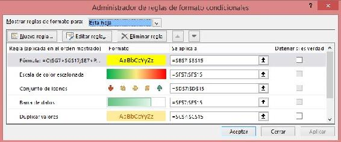
Editar los formatos condicionales predefinidos
La primera modificación que necesitamos conocer (y la más simple de todas) es modificar el
rango al que aplica un formato condicional. Para ello pinchamos en el cuadro de texto de la
columna Se aplica a de la regla que queramos modificar y escribimos el nuevo rango al que
aplicarlo, o pinchamos en el botón de la derecha (↑) y seleccionamos el rango.
Las modificaciones en el propio formato condicional (las condiciones y los formatos aplicados)
se hacen pulsando sobre una condición y pulsando Editar regla. Al hacerlo se abre una ventana
con la información sobre el formato.
Aplicar formato a todas las celdas según sus valores
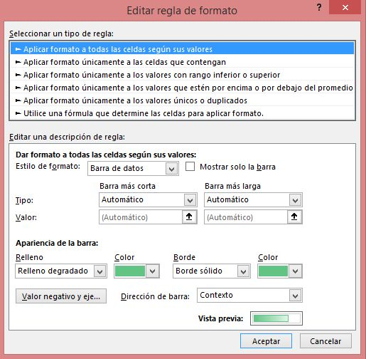
El primer tipo son los formatos condicionales que no necesitan condición inicial:
barras de datos, escalas de color (2 o 3 colores) y conjuntos de iconos. Desde aquí podemos
cambiar los colores con total libertad, cambiar como se escogen los datos más altos y bajos
(por ejemplo, en una barra de datos, que no comience a aparecer la barra a partir del valor 0,
sino a partir del número más bajo, o en una escala de 3 colores que el color intermedio no sea
la media de todos los datos, sino el 80% respecto del máximo), elegir si se muestran los
valores numéricos en la celda o solo la representación gráfica del formato condicional, etc.
Aplicar formato únicamente a las celdas que contengan
Cada celda se evalúa contra una condición especificada, y si se cumple se aplica el formato especificado.
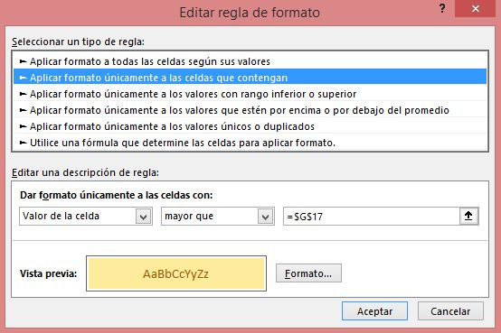
Aquí se podría poner como condición que la celda sea mayor que la celda de su izquierda, por ejemplo.
En este caso, si se quisiera aplicar el formato a un conjunto de celdas (que cada celda se marque si
es mayor que la de su izquierda) hay que tener en cuenta que por defecto al escribir la
condición se bloquea la celda, por lo que el formato se referirá todo el rato a la celda marcada
inicialmente). Si queremos marcar las celdas mayores que las de su izquierda y no tener que introducir todas las
condiciones una a una tendremos que saber utilizar el símbolo $.
Aplicar formato únicamente a los valores con rango inferior o superior
Funciona exactamente igual que los predefinidos de Reglas superiores e inferiores,
se elige si marcar los más altos o los más bajos y si vamos a marcar una cantidad
concreta o un porcentaje de la selección.
Aplicar formato únicamente a los valores por encima o por debajo del promedio
Las 4 primeras opciones son igual que los predefinidos, marcar según el valor
sea por encima o por debajo (o igual) del promedio del rango. El resto de
las opciones son para marcar según la relación con la desviación.
Aplicar formato únicamente a los valores únicos o duplicados
Tan solo hay que elegir en el desplegable si queremos que se marquen los valores
que son únicos en el rango o los que están duplicados en el rango.
Utilice una fórmula que determine las celdas para aplicar formato
Esto no es una modificación, sino una creación desde cero.
En cualquiera de los último 5 casos, una vez que definimos la condición, no tenemos más que
pinchar en Formato y seleccionar todas las características que queremos que tenga nuestro
formato (formato de contenido, color de texto y de celda, bordes…). Al aceptar, en el recuadro
de Vista previa podemos ver cómo quedará el formato cuando se aplique.
Desde la misma ventana que hemos abierto para detectar y modificar los formatos podemos crear un
nuevo formato sobre las celdas que tengamos seleccionadas, pulsando Nueva regla y eligiendo una
condición y un formato como acabamos de ver que se hace para editar.
Crear formatos condicionales personalizados
Acabamos de ver que el último de los tipos de reglas para aplicar formatos condicionales es
utilizar una fórmula que determine las celdas para aplicar formato. Esto quiere decir que podemos
introducir nuestra propia regla en forma de función para marcar las celdas que cumplan la condición.
Por tanto, estos formatos personalizados no incluyen barras, escalas de colores o conjuntos de iconos,
sino que son únicamente para resaltar celdas.
Como aún no hemos empezado a hablar sobre las funciones vamos a pasar rápido por estos formatos,
pero vamos a ver un ejemplo concreto de función simple:
=O($G7>$G$17;$E7>PROMEDIO($E$7:$E$15))
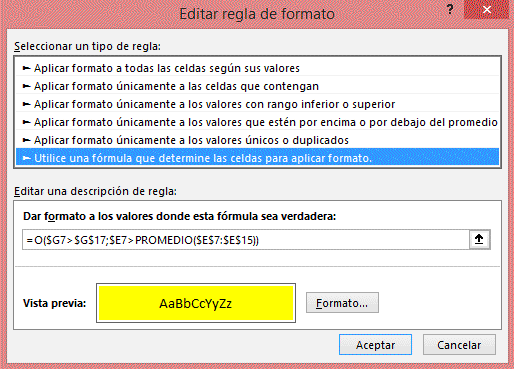
Lo que estamos viendo es una función lógica “O”, por lo que el formato se va a aplicar si se cumple
la primera condición O se cumple la segunda condición, y dichas condiciones son:
La celda G7 es mayor que la celda G17
La celda E7 es mayor que el promedio de las celdas E7 hasta la E15
Esto puede ser un poco confuso si aún no sabes sobre funciones, pero una vez que sepas como usar
funciones será muy sencillo entender el funcionamiento de esta fórmula y crear las tuyas propias
para cumplir con tus necesidades de formatos condicionales más allá de las opciones básicas que
ofrece Excel.
Tipos de datos
Excel nos permite trabajar con distintos tipos de datos, como
números, fechas y texto, entre otros. Si bien al ingresarlos en las
celdas, estos son detectados de manera automática, el programa no
siempre interpreta de modo correcto lo que deseamos, y por eso es
necesario saber cómo lograr que cada dato se corresponda con su tipo
específico.
Número
El tipo de datos numérico es el que más utilizaremos en nuestras
hojas de cálculo. Al ingresar un número en una celda, el programa
reconocerá el formato numérico y el valor aparecerá alineado a la
derecha.
Los principales aspectos que debemos tener en cuenta al
ingresar números son los siguientes:
Se admite como número a los caracteres del 0 al 9, el punto decimal
(.) y el separador de miles (,). La función de estos últimos elementos
podrán variar según la configuración regional del sistema operativo
de la computadora en la que estemos trabajando.
Si utilizamos el punto (.) del teclado numérico, este se tomará como
separador decimal, al igual que el punto (.) del teclado alfanumérico.
El punto (.) que se encuentra en el teclado alfanumérico será
considerado como separador decimal.
Podemos agregar un signo monetario, como $ o €, al asignar un
formato de celda monetario.
El uso de los símbolos + (más), - (menos),
* (multiplicar) y / (dividir) junto con los
números será interpretado como un cálculo
válido si ingresamos el signo \( = \) (igual). Por ejemplo: =100*3.5
Un número seguido del signo % será tomado
como porcentaje. Al ingresarlo, Excel
dividirá el valor por 100, pero mostrará el
número ingresado seguido de del signo %.
Ejemplo: Si escribimos 40%, eso es lo
que veremos en la celda, aunque el valor numérico será 0.40. En
cambio, si escribimos 40 y le aplicamos el signo % desde la cinta
de opciones, lo que veremos es 400%. Para que se muestre 40%,
debemos escribir 0,40 y luego aplicar % desde la cinta
Observaciones:
Como consideración general, siempre conviene ingresar los números
sin ningún carácter adicional, solo con el signo menos (\( -\)) si correspondiese y el punto
decimal (.) si el número tuviera decimales.
Por ejemplo: 100,000.00 debe
escribirse así: 100000. Luego, con los
formatos de celda podremos verlo con más
o menos decimales, formato monetario, contabilidad, etc
Si los símbolos +, -, * y / no son precedidos
por el signo = se mostrarán en forma literal sin efectuarse la operación
Texto
El tipo de datos texto abarca las cadenas de caracteres
alfanuméricos, es decir, conjuntos de letras, símbolos y números. Se
utiliza, principalmente, para escribir nombres, rotular información y
describir características, entre otras posibilidades.
Cuando ingresamos texto en una celda, Excel reconocerá de manera
automática este tipo de dato y, de manera predeterminada, lo alineará
a la izquierda, al igual que si ingresamos una combinación de números
y letras más símbolos. Esto puede cambiar si el texto comienza con
el signo igual (=) o con el signo más (+) o menos (-). El programa
interpretará que lo que sigue es una fórmula de cálculo; por lo tanto,
si queremos que sea interpretado como texto, debemos anteponer el
carácter comilla simple (')
Fecha y hora
Excel utiliza como elementos separadores de fecha la barra (/) y
el guion (-). Al ingresar dos o tres números separados con alguno de
estos caracteres, el programa los interpreta como fechas. Por ejemplo,
si ingresamos 3/5, aparecerá 03-may del año en curso. En el caso de que
sea 25-2-13, veremos 25/02/2013
El formato de fecha que se interpreta de modo predeterminado
depende de la configuración regional establecida en el sistema
operativo. La configuración regional por defecto, en la mayoría de los
países de habla hispana, es dd/mm/aaaa (día/mes/año); y en los Estados
Unidos es mm/dd/aaaa (mes/día/año).
Además, una fecha como 15/2/2013 tendrá formato de Fecha corta,
mientras que viernes, 15 de febrero de 2013 tendrá formato de Fecha larga.
Ahora, si queremos ingresar un dato en formato de hora, lo hacemos
escribiendo dos números (hora y minutos) separados por dos puntos
(:). Así se interpretará el formato de hora hh:mm (hora:minuto). En
cambio, si ingresamos tres números separados con dos puntos (:) se
toman como hh:mm:ss (hora:minuto:segundo).
Configuración regional
La configuración regional del sistema operativo determina la manera
en que Excel y los demás programas interpretan los números, las
fechas y la distribución del teclado.
Para modificarla, debemos presionar el botón Iniciar, ingresar en
el Panel de control y acceder a la categoría Reloj, idioma y región. Dentro
de la categoría Configuración regional e idiomas podemos modificar
la configuración en general. Es posible elegir los separadores de
decimales y de miles (, o .), el símbolo de la moneda y el formato
de fecha y hora, entre otras opciones. En los países de habla hispana,
las principales opciones predeterminadas suelen ser: fecha corta:
dd/mm/aaaa, símbolo decimal: , (coma), separador de miles: . (punto).
Barra de fórmulas
Cuando trabajamos con hojas de cálculo, introduciremos en ellas
datos de diferentes tipos, como números, fechas y textos; y para
procesarlos, utilizaremos fórmulas y funciones o la combinación de
ambas. Para ingresar los datos en Excel podemos escribir directamente
en las celdas o también es posible utilizar la Barra de fórmulas.
En esta
sección analizaremos sus opciones:
Cuadro de nombres
Cuando comenzamos a trabajar con Excel y creamos las primeras
fórmulas, nos referimos a las celdas por la intersección de la columna y
la fila, por ejemplo: A1, aunque también podemos darles un nombre. El
Cuadro de nombres permite acceder rápidamente a una celda o asignarle
un nombre a una celda o rango; esto facilita su uso en las fórmulas o
funciones que emplearemos en los diferentes cálculos.
Para asignarle un nombre a una celda o rango, seleccionamos las
celdas, ingresamos la denominación dentro del Cuadro de nombres y
luego, presionamos la tecla ENTER.
Si asignamos nombres a diferentes celdas o rangos de celdas,
y queremos ver la lista de nombres creados en el libro, debemos
presionar la flecha que se encuentra a la derecha del cuadro
. Se
desplegará una lista con todos los nombres asignados en el libro,
incluidos los de las tablas que hayamos creado.
Distribuir el espacio
Sobre la derecha del Cuadro de nombres se muestra un pequeño
icono formado por tres puntos situados de manera vertical
. Al acercar
el puntero del mouse, notaremos que este cambia de forma, para
convertirse en una flecha horizontal de doble punta. En ese momento,
podemos hacer clic con el botón principal del mouse y sin soltarlo
arrastrar hacia la derecha o la izquierda. De este modo cambiaremos
el tamaño del área correspondiente al Cuadro de nombres o al área de
introducción, para hacerlas más grandes o más pequeñas.
Iconos de la Barra de fórmulas
A la derecha del Cuadro de nombre se encuentran tres iconos, cuya
función explicaremos a continuación:
El botón
(Cancelar) se emplea para anular la introducción o modificación del dato que se ha estado escribiendo
en la celda.
El botón
(Introducir) aceptará el dato que se haya estado escribiendo en la celda, añadiéndolo a la hoja de
cálculo activa
El botón
(Insertar función) Al pulsar el icono Insertar función
Permite añadir una función de Excel, al hacer click llamamos al Asistente de funciones, que nos permite
insertar una función en la celda activa. Este asistente nos guía en la selección de los argumentos que debe llevar
la función y brinda una breve descripción de cada uno.
Es frecuente que los usuarios avanzados no usen este asistente en todos
los casos, porque con el tiempo se aprenden la sintaxis de muchas de las
funciones. Los iconos Introducir
y Cancelar
se activan en el modo de
edición (cuando estamos ingresando datos o modificando el contenido de
una celda), y permiten cancelar o aceptar el ingreso o la modificación.
Espacio para datos
El área de escritura/edición
es el lugar donde
vamos a ingresar los datos, fórmulas y funciones,
o desde donde, posteriormente, editaremos el
contenido de una celda. En ocasiones, al crear
fórmulas extensas, el espacio disponible para la
edición/visualización no es lo suficientemente
grande como para mostrar todo el contenido que
hemos introducido. En estos casos, es posible
aumentar el espacio haciendo clic sobre el icono
de expansión
del área de escritura situado sobre el extremo derecho de
la barra. Al hacer clic sobre este icono, el área de escritura se ampliará
Truco:
Microsoft Excel permite escribir en más de una línea dentro de una misma celda. Para lograr ingresar datos
en una nueva línea dentro de una celda, debemos presionar la combinación de teclas ALT + ENTER
y se creará un salto de línea. Tengamos en cuenta que el programa ajusta de manera automática el alto
de la fila, de acuerdo con la cantidad de líneas de contenido
Operaciones básicas
Excel posee una gran cantidad de herramientas que permiten el
uso profesional y también hogareño. Una de ellas son las fórmulas y
las funciones, que nos ayudan a resolver problemas tanto sencillos
como complejos. Con ellas podremos realizar distintas operaciones:
matemáticas, lógicas y financieras, entre otras. Las fórmulas son
operaciones matemáticas o llamadas a funciones en las que se analizan
variables y se obtiene un resultado.
Ingresar fórmulas
Siempre que vamos a escribir una fórmula, tenemos que utilizar el
operador o signo igual (=). De esta manera, el programa interpretará
que lo siguiente que escribiremos es una fórmula o una función.
Antes de describir la ficha Fórmulas de la cinta de opciones, veremos
algunas de las operaciones básicas que podemos efectuar sin tener
que recurrir a este menú.
Para realizar operaciones, es posible utilizar los datos de dos
maneras con características específicas:
Literales: escribimos los números directamente dentro de la
fórmula, por ejemplo: =15+14.
Referencia a valores: utilizamos los nombres de las celdas, por
ejemplo: =A4 + A5, donde A4 y A5 contienen valores numéricos.
Observaciones:
Las operaciones en Excel se realizan en un orden, siempre de
izquierda a derecha y respetando la jerarquía de los operadores
aritméticos: división, multiplicación, suma y resta. Debemos tener
esto en cuenta a la hora de efectuar las operaciones básicas,
para no cometer errores. Sin embargo, la mejor manera de evitar
equivocaciones es recurrir a los paréntesis, ya que Excel primero
resolverá las operaciones que estén dentro de ellos.
Una vez que aprendamos a utilizar las fórmulas, ya no
necesitaremos una calculadora para hacer las operaciones básicas
dentro de una hoja de cálculo, sino que podremos sumar, restar,
multiplicar y dividir por medio de la siguiente estructura:
=(operando1)(operador aritmético)(operando2)
Observación:Al situarnos en una celda, la Barra de fórmulas mostrará el cálculo realizado.
Editar fórmulas
Si lo necesitamos, podemos editar los datos que se encuentran
dentro de la fórmula tanto desde la Barra de fórmulas como desde la
celda que contiene la operación.
Para saber si una celda tiene una fórmula o si, simplemente,
queremos ver la fórmula en la celda, presionamos la tecla F2. Excel mostrará
la fórmula en la celda, y en el caso de que hayamos usado
referencias a valores, señalará con un color cada una de las celdas que
están involucradas en la operación. Esta tecla tiene el mismo efecto que
hacer doble clic sobre la celda
Ficha Fórmulas
Ahora sí conoceremos la ficha Fórmulas, que nos permite crear o
modificar diferentes funciones.
El primer grupo, Biblioteca de funciones, contiene toda la variedad de fórmulas que existen en Excel.
A continuación, las veremos en detalle
Icono
Tipo de funciones
Detalles
Autosuma
Contiene funciones sencillas y de uso frecuente, para
realizar una suma, calcular un promedio, obtener un valor máximo o
mínimo y contar elementos.
Recientes
agrupa las últimas funciones utilizadas.
Financieras
Posee las funciones para realizar cálculos financieros,
como la obtención de intereses y tasas, calcular pagos y
amortizaciones de préstamos.
Lógicas
Estas funciones permiten realizar operaciones de lógica,
como analizar si un valor cumple o no una determinada condición, en consecuencia, efectuar una acción; o averiguar si algo es
verdadero o falso.
Texto
Reúne las funciones para trabajar con textos, como extraer
datos, pasar caracteres a mayúscula o minúscula, o unir el
contenido de dos celdas para armar una frase.
Fecha y hora
Incluye las funciones para realizar operaciones con fechas
y horas, como obtener los días laborales de un año o la fecha actual.
Búsqueda y referencia: con estas funciones podemos buscar datos en
una tabla a partir de condiciones especificadas y utilizarlos para
realizar cálculos o referencias de celda.
Matemáticas y trigonométricas
Algunas de las funciones que podemos
encontrar en este grupo son SUMA (con diferentes variantes),
REDONDEO, COSENO, TANGENTE y PRODUCTO
Más funciones
Contiene cinco subgrupos de funciones avanzadas.
Estadísticas: Para efectuar cálculos estadísticos, como, por ejemplo,
frecuencias, desvíos, media, moda.
Ingeniería: Para realizar diferentes operaciones con números
complejos, binarios, imaginarios.
Cubo: Para trabajar con cubos de datos.
Información: Para obtener información sobre el formato de una
celda o el tipo de datos que contiene.
Compatibilidad: Agrupa las funciones que facilitan la compatibilidad
con versiones anteriores de Excel.
Web: Posee funciones para trabajar con una conexión a Internet
(obtener datos de un servicio web, codificación de cadenas URL, etc.
Si presionamos Insertar función,
se abre un cuadro del diálogo con la lista de todas las funciones; ahí podemos buscar y seleccionar la que
necesitamos. Por ejemplo, elegimos Suma y presionamos Aceptar.
Luego,
se abrirá otro cuadro de diálogo para elegir las celdas que vamos a
sumar, por ejemplo, B3 y B4. Luego de aceptar, obtenemos el resultado.
Errores
En general en una hoja de cálculo, los distintos tipos de valores que podemos introducir son:
Valores constantes: Un dato que se introduce directamente en una celda. Puede ser un número, una fecha
u hora, o un texto.
Fórmulas: Una secuencia formada por valores constantes, referencias a otras celdas, nombres, funciones,
u operadores. Es una técnica básica para el análisis de datos. Se pueden realizar diversas operaciones con los
datos de las hojas de cálculo como \( +, -, *, /, Sen(x), Cos(x)\), etc. Recordemos que en una fórmula se pueden mezclar
constantes, nombres,
referencias a otras celdas, operadores y funciones.
Cuando introducimos una fórmula en una celda puede ocurrir que se produzca un error. Dependiendo del tipo de error
puede que Excel nos avise o no. Podemos detectar un error sin que nos avise cuando aparece la celda con un símbolo en la esquina superior
izquierda tal como esta
Al hacer clic sobre el símbolo aparecerá un cuadro como información error que nos permitirá saber más sobre el error:
Dependiendo del tipo de error, al hacer clic sobre el cuadro anterior se mostrará un cuadro u otro, a veces
el error sea simplemente que la fórmula de la celda no tiene el mismo aspecto que todas las demás fórmulas adyacente
(por ejemplo, ésta sea una resta y todas las demás sumas).
Si no sabemos qué hacer, disponemos de la opción Ayuda sobre este error. Si lo que queremos es comprobar la fórmula
para saber si hay que modificarla o no, podríamos utilizar la opción Modificar en la barra de fórmulas. Si la
fórmula es correcta, se utilizará la opción Omitir error para que desaparezca el símbolo de la esquina de la celda.
Puede que al introducir la fórmula nos aparezca como contenido de la celda #texto, siendo texto un valor que puede
cambiar dependiendo del tipo de error. Por ejemplo:
En ocasiones, podemos equivocarnos al ingresar manualmente el nombre de una función. En estos casos,
al intentar aceptar la función para ver el resultado veremos que Excel nos muestra el error #¡Nombre!. De
esta manera, podemos situarnos en la barra de fórmulas o presionar la tecla F2 para editarlo
Si cometemos un error al ingresar una fórmula, Excel nos devuelve un texto que informa su tipo, entre los que se encuentran:
Mensaje
Signficado
#####
Se produce cuando el ancho de una columna no es suficiente o cuando se utiliza una fecha o una hora negativa.
#¡NUM!
Cuando se escriben valores numéricos no válidos en una fórmula o función.
#¡NULO!
Cuando se especifica una intersección de dos áreas que no se intersectan.
#¡N/A!
Indica que no es posible encontrar una coincidencia exacta
con el valor que se está buscando.
#¡REF!
Referencia a una celda inválida o inexistente.
#¡NÚMERO!
Expresa la existencia de un valor no numérico en una
fórmula de parámetros numéricos.
#¡NOMBRE¡
Nombre de la función incorrecto.
#¡DIV/0!
Cuando se intenta dividir entre cero.
Funciones básicas
Excel posee una gran cantidad de funciones
para diferentes usos. Conocer algunas de ellas
con profundidad nos permitirá resolver tareas
complejas con sencillez.
Una de las características que hacen de Excel
una herramienta tan potente (y fascinante) es la
interminable variedad de formas en que podemos
combinar las funciones en fórmulas,
creando soluciones eficaces que nos permitirán
resolver problemas complejos con rapidez.
Las funciones son muy versátiles, ya que pueden
emplearse en diversos lugares, aunque suelen
acoplarse siempre a las celdas de la hoja de
cálculo.
Observación: Cuando se desea comenzar
a escribir una función en una celda debemos teclear el símbolo = (igual a). A continuación,
se escribe (sin espacios intermedios) el nombre de la función y, por último, si la función lo
necesita, escribiremos (también sin espacios) datos entre paréntesis:
=Nombre_funcion(datos).
¿Qué es una función?
Las funciones son fórmulas predefinidas que utilizan valores en una
estructura u orden específico para realizar cálculos, y devuelven un
resultado. Los valores reciben el nombre de argumentos, y el orden o
estructura es la sintaxis de la función.
Los argumentos pueden ser números, texto, referencias a celdas,
valores constantes, fórmulas u otras funciones.
La sintaxis de una función debe contener los siguientes elementos y
en el orden que detallamos:
El signo igual (=)
El nombre de la función.
Paréntesis de apertura.
Los argumentos separados por coma (,).
Paréntesis de cierre.
Cualquiera sea la función que utilicemos, esta siempre deberá
respetar la siguiente estructura:
=Nombre_funcion(argumento1,argumento2)
Podemos utilizar las funciones para realizar de manera rápida
distintos tipos de operaciones, tanto simples como complejas.
Ejemplo: Si queremos sumar los valores de las celdas C3 hasta C8,
podemos escribir la siguiente fórmula usando el operador suma (+):
=C3 + C4 + C5 + C6 + C7 + C8
También es posible usar la función SUMA y, como único argumento,
ingresar el rango que queremos sumar:
=SUMA(C3:C8)
Con ambas fórmulas llegamos al mismo resultado, pero resulta
mucho más sencillo y rápido utilizar la última.
Si una función requiere dos o más argumentos, los ingresamos
separándolos con coma (,).
El número de argumentos varía para cada función. Incluso, hay
algunas que no requieren ningún argumento, sin que deje de ser
obligatorio para estas el uso de paréntesis. Por ejemplo: =HOY(), que
devuelve la fecha actual.
Ventana Insertar función
Sabemos que las diferentes funciones que presenta Excel se
encuentran agrupadas por categorías en la Biblioteca de funciones. Ahora
veremos cómo podemos utilizar una función.
Primero debemos ubicarnos en la celda donde queremos obtener el
resultado y, luego, pulsar el botón Insertar función, ya sea desde la Barra
de fórmulas o desde la Biblioteca de funciones. A continuación, se abrirá
la ventana Insertar función, el asistente que nos guiará en el proceso de
creación de la sintaxis de la función.
Veamos las opciones que ofrece esta ventana:
Buscar una función: En este cuadro podemos escribir el nombre
de la función o una breve descripción del cálculo que queremos
hacer, y luego, pulsamos el botón Ir. En el cuadro Seleccionar una
función aparecerán listadas todas las funciones relacionas con la
descripción que hemos ingresado.
Seleccionar una categoría: Si conocemos la categoría a la que
pertenece la función que buscamos, podemos desplegar el menú de
esta sección y seleccionarla. A continuación, en el cuadro Seleccionar
una función aparecerá el listado de las funciones que pertenecen a la
categoría elegida. Si seleccionamos la categoría Todo, en el listado
figurarán todas las funciones que posee Excel. Si elegimos Usadas
recientemente, accederemos a las últimas funciones utilizadas.
Seleccionar una función: En este sector podemos desplazarnos mediante
la barra derecha para buscar la función. Si seleccionamos cualquiera
de las funciones, debajo aparecerá su descripción y sintaxis.
Una vez que elegimos la función, pulsamos Aceptar y se abrirá la
ventana Argumentos de función, que nos indicará la cantidad y el tipo
de argumentos requeridos. Aquí podremos ingresar un valor, una
referencia de celda o minimizar la ventana y directamente seleccionar
la celda o el rango en la hoja de cálculo.
En la celda donde comenzamos el proceso para insertar la función
aparecerá el resultado, y si nos colocamos en ella, podremos ver la
sintaxis de la función en la Barra de fórmulas.
Distintas formas de insertar funciones
En Excel podemos insertar funciones de diferentes maneras.
Veremos cuáles son las posibilidades y analizaremos las características
y las ventajas de cada una.
• Desde la celda:
Esta es la opción más rápida para crear una
función, pero también la que requiere un poco más de experiencia
de nuestra parte. Para escribir directamente la función, debemos
hacer un clic en la celda donde queremos insertarla, ingresar el
signo igual (=) desde el teclado y, a continuación, el nombre de
la función. Al ingresar la primera letra del nombre de la función,
aparecerá un asistente con el listado de las funciones que
comienzan con esa letra. Si hacemos un clic sobre el nombre de
alguna de estas funciones, veremos un pequeño cuadro que nos
indicará qué operación realiza. Para elegir una función, debemos
hacer doble clic sobre ella.
Una vez que la seleccionamos, en la celda, a continuación del
nombre, aparecerá un paréntesis de apertura y una indicación de
los argumentos que necesita la función. Seleccionamos el rango de
celdas para completar los argumentos y pulsamos ENTER.
Barra de fórmulas:
Primero debemos seleccionar la celda donde
queremos ingresar la función, luego hacemos un clic en el símbolo
de Insertar función de la Barra de fórmulas. Se abrirá la ventana Insertar
función, que nos guía en el armado de la función.
Biblioteca de funciones:
Desde la ficha Fórmulas de la cinta de opciones,
accedemos al grupo Biblioteca de funciones. Aquí podemos utilizar el
botón Insertar función, que abrirá la ventana del mismo nombre, o
bien desplegar los botones de cada categoría, seleccionar la función
que buscamos y luego, completar los argumentos requeridos dentro
de la ventana Argumentos de función.
Botón Autosuma:
Se encuentra en el grupo Modificar de la ficha
Inicio. Si lo pulsamos directamente, inserta la función SUMA, pero
si hacemos un clic en la flecha de la derecha para desplegar el
menú, podemos elegir otras funciones, como PROMEDIO, CONTAR,
MÁXIMO y MÍNIMO, o también acceder a la ventana Insertar función, si
seleccionamos la opción Más funciones....
Suma, Máximo, Mínimo y Promedio
Luego de hacer una introducción en el concepto de función, veremos
cómo trabajar con algunas funciones sencillas para entender de
manera más clara su lógica y aplicación. Antes de ponerlas en práctica,
repasaremos algunos conceptos.
La función SUMA adiciona el valor de todos los argumentos
ingresados. Estos argumentos pueden ser:
Valores numéricos: =SUMA(13,26)
Referencias de celda: =SUMA(A2,B2,C2)
Rangos: =SUMA(A1:C3,B2:B4)
Otras funciones: =SUMA(MAX(A2:A4), MIN(A2:A4)
Una combinación de todo lo anterior
Desde luego, las referencias deben ser a celdas que contengan valores
numéricos. De manera análoga, la función PROMEDIO calcula el promedio
aritmético de todos los argumentos. La función MAX devuelve el valor
más alto de todos los argumentos y MIN devuelve el menor valor.
Resumen de funciones
Función
Descripción
Detalle
AHORA
Devuelve el número de serie correspondiente a la fecha y hora actuales
AÑO
Convierte un número de serie en un valor de año
DIA
Convierte un número de serie en un valor de día del mes
DIA.LAB
Devuelve el número de serie de la fecha que tiene lugar antes o después de un número determinado de días laborables
DIA.LAB.INTL
Devuelve el número de serie de la fecha anterior o posterior a un número especificado de días laborables mediante parámetros para indicar cuáles y cuántos días son días de fin de semana
DIAS.LAB
Devuelve el número de todos los días laborables existentes entre dos fechas
DIAS360
Calcula el número de días entre dos fechas a partir de un año de 360 días
DIASEM
Convierte un número de serie en un valor de día de la semana
FECHA
Devuelve el número de serie correspondiente a una fecha determinada
FECHA.MES
Devuelve el número de serie de la fecha equivalente al número indicado de meses anteriores o posteriores a la fecha inicial
FECHANUMERO
Convierte una fecha con formato de texto en un valor de número de serie
FIN.MES
Devuelve el número de serie correspondiente al último día del mes anterior o posterior a un número de meses especificado
FRAC.AÑO
Devuelve la fracción de año que representa el número total de días existentes entre el valor de fecha_inicial y el de fecha_final
HORA
Convierte un número de serie en un valor de hora
HOY
Devuelve el número de serie correspondiente al día actual
MES
Convierte un número de serie en un valor de mes
MINUTO
Convierte un número de serie en un valor de minuto
NSHORA
Devuelve el número de serie correspondiente a una hora determinada
NUM.DE.SEMANA
Convierte un número de serie en un número que representa el lugar numérico correspondiente a una semana de un año
SEGUNDO
Convierte un número de serie en un valor de segundo
VALHORA
Convierte una hora con formato de texto en un valor de número de serie
Función
Descripción
Detalle
CARACTER
Devuelve el carácter especificado por el número de código
CODIGO
Devuelve un código numérico del primer carácter de una cadena de texto
CONCATENAR
Concatena varios elementos de texto en uno solo
DECIMAL
Da formato a un número como texto con un número fijo de decimales
DERECHA, DERECHAB
Devuelve los caracteres del lado derecho de un valor de texto
ENCONTRAR, ENCONTRARB
Busca un valor de texto dentro de otro (distingue mayúsculas de minúsculas)
EXTRAE, EXTRAEB
Devuelve un número específico de caracteres de una cadena de texto que comienza en la posición que se especifique
HALLAR, HALLARB
Busca un valor de texto dentro de otro (no distingue mayúsculas de minúsculas)
IGUAL
Comprueba si dos valores de texto son idénticos
IZQUIERDA, IZQUIERDAB
Devuelve los caracteres del lado izquierdo de un valor de texto
LARGO, LARGOB
Devuelve el número de caracteres de una cadena de texto
LIMPIAR
Quita del texto todos los caracteres no imprimibles
MAYUSC / MINUSC
Convierte el texto en mayúsculas o en minúsculas respectivamente
MONEDA
Convierte un número en texto, con el formato de moneda $ (dólar)
NOMPROPIO
Pone en mayúscula la primera letra de cada palabra de un valor de texto
REEMPLAZAR, REEMPLAZARB
Reemplaza caracteres de texto
REPETIR
Repite el texto un número determinado de veces
SUSTITUIR
Sustituye texto nuevo por texto antiguo en una cadena de texto
T
Si el valor es un texto lo devuelve, y si no devuelve una cadena vacía
TEXTO
TEXTOBAHT
Convierte un número en texto, con el formato de moneda ß (Baht)
Función
Descripción
Ver
detalle
AREAS
Devuelve el número de áreas de una referencia
BUSCAR
Busca valores de un vector o una matriz
BUSCARH
Busca en la fila superior de una matriz y devuelve el valor de la celda indicada
BUSCARV
Busca en la primera columna de una matriz y se mueve en horizontal por la fila para devolver el valor de una celda
COINCIDIR
Busca valores de una referencia o matriz
COLUMNA
Devuelve el número de columna de una referencia
COLUMNAS
Devuelve el número de columnas de una referencia
DESREF
Devuelve un desplazamiento de referencia respecto a una referencia dada
DIRECCION
Devuelve una referencia como texto a una sola celda de una hoja de cálculo
ELEGIR
Elige un valor de una lista de valores
FILA
Devuelve el número de fila de una referencia
FILAS
Devuelve el número de filas de una referencia
HIPERVINCULO
Crea un acceso directo o un salto que abre un documento almacenado en un servidor de red, en una intranet o en Internet
IMPORTARDATOSDINAMICOS
Devuelve los datos almacenados en un informe de tabla dinámica
INDICE
Usa un índice para elegir un valor de una referencia o matriz
INDIRECTO
Devuelve una referencia indicada por un valor de texto
TRANSPONER
Devuelve la transposición de una matriz
Función
Descripción
Ver
detalle
AMORTIZ.LIN
Devuelve la amortización de cada uno de los períodos contables
AMORTIZ.PROGRE
Devuelve la amortización de cada período contable mediante el uso de un coeficiente de amortización
CUPON.DIAS
Devuelve el número de días del período (entre dos cupones) donde se encuentra la fecha de liquidación
CUPON.DIAS.L1
Devuelve el número de días desde el principio del período de un cupón hasta la fecha de liquidación
CUPON.DIAS.L2
Devuelve el número de días desde la fecha de liquidación hasta la fecha del próximo cupón
CUPON.FECHA.L1
Devuelve la fecha de cupón anterior a la fecha de liquidación
CUPON.FECHA.L2
Devuelve la fecha del próximo cupón después de la fecha de liquidación
CUPON.NUM
Devuelve el número de pagos de cupón entre la fecha de liquidación y la fecha de vencimiento
DB
Devuelve la amortización de un bien durante un período específico a través del método de amortización de saldo fijo
DDB
Devuelve la amortización de un bien durante un período específico a través del método de amortización por doble disminución de saldo u otro método que se especifique
DVS
Devuelve la amortización de un bien durante un período especificado usando el método de amortización acelerada con una tasa doble y según el coeficiente que se especifique.
DURACION
Devuelve la duración anual de un valor bursátil con pagos de interés periódico
INT.ACUM
Devuelve el interés acumulado de un valor bursátil con pagos de interés periódicos
INT.ACUM.V
Devuelve el interés acumulado de un valor bursátil con pagos de interés al vencimiento
INT.EFECTIVO
Devuelve la tasa de interés anual efectiva
INT.PAGO.DIR
Calcula el interés pagado durante un período específico de una inversión. Esta función se incluye para proporcionar compatibilidad con Lotus 1-2-3.
MONEDA.DEC
Convierte una cotización de un valor bursátil expresada en forma fraccionaria en una cotización de un valor bursátil expresada en forma decimal
MONEDA.FRAC
Convierte una cotización de un valor bursátil expresada en forma decimal en una cotización de un valor bursátil expresada en forma fraccionaria
NPER
Devuelve el número de pagos de una inversión,
basada en pagos constantes y periódicos y una tasa de interés
constante.
PAGO.INT.ENTRE
Devuelve el interés acumulado pagado entre dos períodos
PAGO.PRINC.ENTRE
Devuelve el capital acumulado pagado de un préstamo entre dos períodos
PAGOINT
Devuelve el pago de intereses de una inversión durante un período determinado
PAGOPRIN
Devuelve el pago de un capital de una inversión
determinada, basado en pagos constantes y periódicos y una tasa
de interés constante.
SYD
Devuelve la depreciación por método
de anualidades de un bien durante un período específico.
TASA
Devuelve la tasa de interés por periodo de
un préstamo o una inversión.
TASA.DESC
Devuelve la tasa de descuento de un valor bursátil
TASA.INT
Devuelve la tasa de interés para la inversión total de un valor bursátil
TIR
Devuelve la tasa interna de retorno de una inversión
para una serie de valores en efectivo.
TIRM
Devuelve la tasa interna de retorno modificada, para
una serie de flujos periódicos, considerando costo de la inversión
e interés al volver a invertir el efectivo.
VA
Devuelve el valor actual de una inversión.
El valor actual es el valor que tiene actualmente la suma de una serie
de pagos que se efectúan en el futuro.
VF
Devuelve el valor futuro de una inversión
VF.PLAN
Devuelve el valor futuro de un capital inicial después de aplicar una serie de tasas de interés compuesto
VNA
Devuelve el valor neto actual de una inversión
a partir de una tasa de descuentos y una serie de pagos futuros.
Función
Descripción
Ver
Detalle
Funciones matemáticas y trigonométricas
ABS
Devuelve el valor absoluto de un número
ALEATORIO
Devuelve un número entre 0 y 1
COMBINAT
Devuelve el número de combinaciones para un número determinado de elementos
COS
Devuelve el coseno de un ángulo
ENTERO
Redondea un número hasta el entero inferior más próximo
EXP
Realiza el cálculo de elevar "e" a la potencia de un número determinado
FACT
Devuelve el factorial de un número
NUMERO.ROMANO
Devuelve el número pasado en formato decimal a número Romano
PI
Devuelve el valor de la constante pi
POTENCIA
Realiza el cálculo de elevar un número a la potencia indicada
PRODUCTO
Devuelve el resultado de realizar el producto de todos los números pasados como argumentos
RAIZ
Devuelve la raiz cuadrada del número indicado
RESIDUO
Devuelve el resto de la división
Funciones estadísticas
MEDIA.ARMO
Devuelve la media armónica de un conjunto de números positivos
MAX
Devuelve el valor máximo de la lista de valores
MIN
Devuelve el valor mínimo de la lista de valores
MEDIANA
Devuelve la mediana de la lista de valores
MODA
Devuelve el valor que más se repite en la lista de valores
PROMEDIO
Devuelve la media aritmética de la lista de valores
VAR
Devuelve la varianza de una lista de valores
K.ESIMO.MAYOR
Devuelve el valor k-ésimo mayor de un conjunto de datos
K.ESIMO.MENOR
Devuelve el valor k-ésimo menor de un conjunto de datos
Funciones lógicas
FALSO
Devuelve el valor lógico Falso
VERDADERO
Devuelve el valor lógico Verdadero
SI
Devuelve un valor u otro, según se cumpla o no una condición
NO
Invierte el valor lógico proporcionado
Y
Comprueba si todos los valores son verdaderos
O
Comprueba si algún valor lógico es verdadero y devuelve VERDADERO
Funciones de información
ESBLANCO
Comprueba si se refiere a una celda vacía
ESERR
Comprueba si un valor es un error
ESLOGICO
Comprueba si un valor es lógico
ESNOTEXTO
Comprueba si un valor no es de tipo texto
ESTEXTO
Comprueba si un valor es de tipo texto
ESNUMERO
Comprueba si un valor es de tipo numérico
TIPO
Devuelve un número que representa el tipo de datos del valor
Operadores de cálculo y prioridad en Excel
Los operadores especifican el tipo de cálculo que desea realizar en los
elementos de una fórmula, como suma, resta, multiplicación o división
Existen cuatro tipos de operadores de cálculo: aritmético, comparación,
concatenación de texto y referencia.
Operadores aritméticos
Para realizar operaciones matemáticas básicas como suma, resta o multiplicación
(o para combinar números) y generar resultados numéricos, use los operadores aritméticos de esta tabla.
Operador aritmético
Significado
Ejemplo
+ (signo más)
Suma
=3+3
– (signo menos)
Resta
Negación
=3–1
=–1
* (asterisco)
Multiplicación
=3*3
/ (barra oblicua)
División
=3/3
% (signo de porcentaje)
Porcentaje
=20 %
^ (acento circunflejo)
Exponenciación
=2^3
Operadores de comparación
Con los operadores de la tabla siguiente, puede comparar dos valores. Cuando se comparan dos valores mediante
estos operadores, el resultado es un valor lógico, ya sea VERDADERO o FALSO.
Operador de comparación
Significado
Ejemplo
= (signo igual)
Igual a
=A1=B1
> (signo mayor que)
Mayor que
=A1>B1
< (signo menor que)
Menor que
=A1<B1
>= (signo mayor o igual que)
Mayor o igual que
=A1>=B1
<= (signo menor o igual que)
Menor o igual que
=A1<=B1
<> (signo distinto de)
No es igual a
=A1<>B1
Operadores de concatenación de texto
Use la y comercial (&) para unir o concatenar una o más cadenas de texto para generar un único fragmento de texto.
Operador de texto
Significado
Ejemplo
& ("y" comercial)
Conecta o concatena dos valores para generar un valor de texto continuo.
="North"&"wind"
Operadores de referencia
Combine rangos de celdas para los cálculos con estos operadores.
Operador de referencia
Significado
Ejemplo
: (dos puntos)
Operador de rango, que genera una referencia a todas las celdas entre dos referencias, estas incluidas
=SUMA(B5:B15)
. (punto)
Operador de unión, que combina varias referencias en una sola.
=SUMA(B5:B15;D5:D15)
(espacio)
Operador de intersección, que genera una referencia a las celdas comunes a las dos referencias.
=SUMA(B7:D7 C6:C8)
# (libra)
El símbolo # se usa en varios contextos:
Se usa como parte de un nombre de error.
Se usa para indicar que no hay suficiente espacio para representar. En la mayoría de los casos, puede ampliar la columna hasta que el contenido se muestre correctamente.
Operador de rango desbordado, que se usa para hacer referencia a un rango completo en una
fórmula de matriz dinámica.
#¡VALOR!
#####
=SUMA(A2#)
@ (a las)
Operador de referencia, que se usa para indicar una intersección implícita en una fórmula.
=@A1:A10
=SUMA(Tabla1[@[Enero]:[Diciembre]])
Prioridad de operadores
Si se combinan varios operadores en una única fórmula, Excel ejecutará las operaciones en el orden que se indica en la
siguiente tabla. Si una fórmula contiene operadores con la misma prioridad (por ejemplo, si una fórmula contiene un
operador de multiplicación y otro de división), Excel evaluará los operadores de izquierda a derecha.
Orden en que Excel ejecuta las operaciones en las fórmulas
En algunos casos, el orden en el que se realiza el cálculo puede afectar al valor devuelto de la fórmula,
por lo que es importante comprender el orden y cómo puede cambiar el orden para obtener los resultados que espera ver.
Orden de calculo
Las fórmulas calculan los valores en un orden específico. Las fórmulas de Excel siempre comienzan por un signo igual (=).
El signo igual indica a Excel que los caracteres siguientes constituyen una fórmula. Después de este signo igual,
puede haber una serie de elementos que se van a calcular (los operandos), que están separados por operadores de cálculo.
Excel calcula la fórmula de izquierda a derecha, según el orden específico de cada operador de la fórmula.
Operador
Descripción
: (dos puntos)
(un solo espacio)
. (punto)
Operadores de referencia
–
Negación (como en –1)
%
Porcentaje
^
Exponenciación
* y /
Multiplicación y división
+ y -
Suma y resta
&
Conecta dos cadenas de texto (concatenación)
=
< >
<=
>=
<>
Comparación
Uso de paréntesis
Para cambiar el orden de evaluación, escriba entre paréntesis la parte de la fórmula que se calculará en primer lugar.
Por ejemplo, la siguiente fórmula da como resultado el valor de 11, porque Excel calcula la multiplicación antes que
la suma. La fórmula multiplica primero 2 por 3 y después suma 5 al resultado.
=5+2*3
Por el contrario, si usa paréntesis para cambiar la sintaxis, Excel suma 5 y 2 y, a continuación, multiplica el resultado
por 3 para producir 21.
=(5+2)*3
En el ejemplo siguiente, los paréntesis que encierran la primera parte de la fórmula obligarán a Excel a calcular
B4+25 en primer lugar y, a continuación, dividirá el resultado por la suma de los valores de las celdas D5, E5 y F5.
=(B4+25)/SUMA(D5:F5)
Cómo Excel convierte los valores de las fórmulas
Al escribir una fórmula, Excel espera tipos específicos de valores para cada operador. Si escribe un tipo de valor
diferente del esperado, Excel puede convertir el valor
La fórmula
Produce
Explicación
= "1"+"2"
3
Al usar un signo más (+), Excel espera números en la fórmula. Aunque las comillas significan que "1" y "2" son valores de texto, Excel convierte automáticamente los valores de texto en números.
= 1+"$4,00"
5
Cuando una fórmula espera un número, Excel convierte texto si está en un formato que normalmente se aceptaría para un número.
= "1/6/2001"-"1/5/2001"
31
Excel interpreta el texto como una fecha en formato mm/dd/aaaa, convierte las fechas en números de serie y luego calcula la diferencia entre ellas.
=RAIZ ("8+1")
#¡VALOR!
Excel no se puede convertir el texto en un número porque el texto "8+1" no se puede convertir en número. Puede usar "9" o "8"+"1" en lugar de "8+1" para convertir el texto en un número y devolver el resultado de 3.
= "A"&VERDADERO
ATRUE
Cuando se espera texto, Excel convierte números y valores lógicos como VERDADERO y FALSO en texto.

 (Cancelar) se emplea para anular la introducción o modificación del dato que se ha estado escribiendo
en la celda.
(Cancelar) se emplea para anular la introducción o modificación del dato que se ha estado escribiendo
en la celda.
 (Introducir) aceptará el dato que se haya estado escribiendo en la celda, añadiéndolo a la hoja de
cálculo activa
(Introducir) aceptará el dato que se haya estado escribiendo en la celda, añadiéndolo a la hoja de
cálculo activa
 (Insertar función) permite añadir una función de Excel
(Insertar función) permite añadir una función de Excel


 permite acceder rápidamente a una celda o asignarle
un nombre a una celda o rango; esto facilita su uso en las fórmulas o
funciones que emplearemos en los diferentes cálculos.
permite acceder rápidamente a una celda o asignarle
un nombre a una celda o rango; esto facilita su uso en las fórmulas o
funciones que emplearemos en los diferentes cálculos.
 . Al acercar
el puntero del mouse, notaremos que este cambia de forma, para
convertirse en una flecha horizontal de doble punta. En ese momento,
podemos hacer clic con el botón principal del mouse y sin soltarlo
arrastrar hacia la derecha o la izquierda. De este modo cambiaremos
el tamaño del área correspondiente al Cuadro de nombres o al área de
introducción, para hacerlas más grandes o más pequeñas.
. Al acercar
el puntero del mouse, notaremos que este cambia de forma, para
convertirse en una flecha horizontal de doble punta. En ese momento,
podemos hacer clic con el botón principal del mouse y sin soltarlo
arrastrar hacia la derecha o la izquierda. De este modo cambiaremos
el tamaño del área correspondiente al Cuadro de nombres o al área de
introducción, para hacerlas más grandes o más pequeñas.
 del área de escritura situado sobre el extremo derecho de
la barra. Al hacer clic sobre este icono, el área de escritura se ampliará
del área de escritura situado sobre el extremo derecho de
la barra. Al hacer clic sobre este icono, el área de escritura se ampliará


 ,
se abre un cuadro del diálogo con la lista de todas las funciones; ahí podemos buscar y seleccionar la que
necesitamos. Por ejemplo, elegimos Suma y presionamos Aceptar.
,
se abre un cuadro del diálogo con la lista de todas las funciones; ahí podemos buscar y seleccionar la que
necesitamos. Por ejemplo, elegimos Suma y presionamos Aceptar.